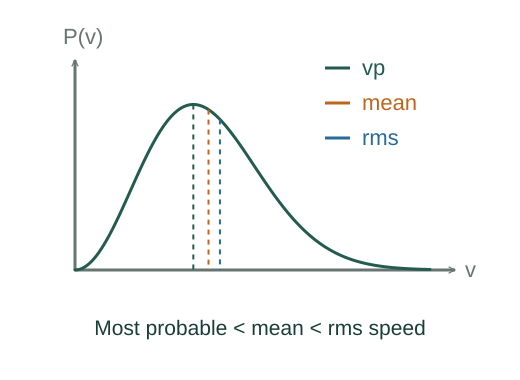

Derive Maxwell speeds and mean free path
Independent Cartesian velocities have Boltzmann weights exp(−avx²). The Gaussian normalization in three dimensions is (a/π)³ᐟ².
What the symbols mean
m: molecular mass; nN = N/V: number density; d: hard-sphere collision diameter; a = m/(2kBT).
When this applies
Classical dilute equilibrium ideal gas; hard-sphere collision model for the mean free path.
Developing the argument

Normalize momentum probabilities
Independent Cartesian velocities have Boltzmann weights exp(−avx²). The Gaussian normalization in three dimensions is (a/π)³ᐟ².
A closer lookWhy is molecular kinetic energy tied to temperature? ↗Count velocity-space shells
Velocities of speed v occupy a spherical shell of volume 4πv²dv. Multiply the Cartesian probability density by that shell factor.
Compute moments and the maximum
Integrating vP(v) gives the mean; equipartition gives ⟨v²⟩. Set d[ln P]/dv = 2/v − 2av = 0 to get the most probable speed.
Count collision opportunities
A stationary-target model sweeps collision volume πd²v dt and predicts rate nNπd²v. Thermal motion of identical targets increases mean relative speed to √2 times mean molecular speed.
Divide distance rate by collision rate
Mean free path is mean distance per collision. The molecular speed cancels between path length per second and collisions per second.
A worked example
The three characteristic speeds satisfy vp < vavg < vrms. A narrower collision diameter gives a longer mean free path at fixed density.
Derivation behind this calculation ↗A point to keep straight
Mean free path is a statistical average. The √2 correction is tied to the thermal hard-sphere model, not a universal collision constant.
Check the assumptions and derivation ↗